You do not need to install third-party tracking apps to manage your screen time. Android integrates comprehensive, system-level wellness telemetry directly into your operating system settings.
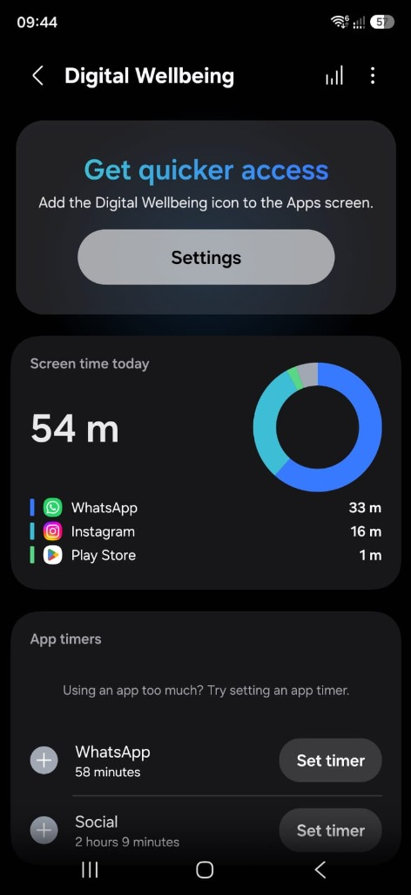
Digital Wellbeing Home & Donut Chart
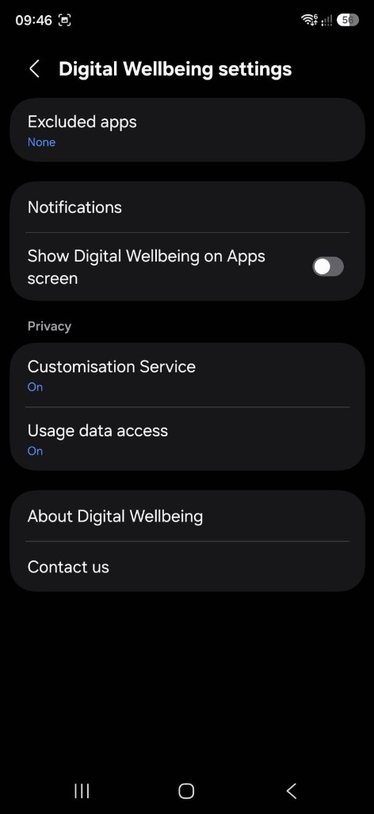
System Settings & Privacy Safeguards
Figure 2.1: Native Digital Wellbeing menu. The donut chart visualizes daily consumption (e.g. 54m total across WhatsApp, Instagram, and Play Store) with zero battery overhead.
Follow these configuration steps:
- Open Settings on your Android phone, scroll down, and tap Digital Wellbeing and parental controls (or Digital Wellbeing on Samsung One UI, Google Pixel, and Xiaomi/HyperOS).
- Tap the three-dot menu in the upper right corner and select Settings.
- Toggle Show Digital Wellbeing on Apps screen to ON. This places a clean shortcut directly in your app drawer so you can monitor screen time without digging through system menus.
- Privacy Safeguard Check: Notice that under Privacy, Usage data access is handled locally by the Android OS. No personal chats, browsing URLs, or passwords are transmitted to external ad servers.
Modern Android (One UI 5/6, Android 13/14) unifies bedtime automation inside the powerful Modes and Routines framework, allowing your handset to adapt automatically to your evening schedule.
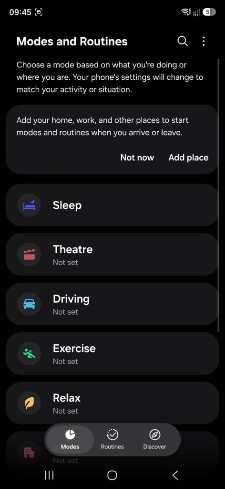
System Modes & Routines Hub
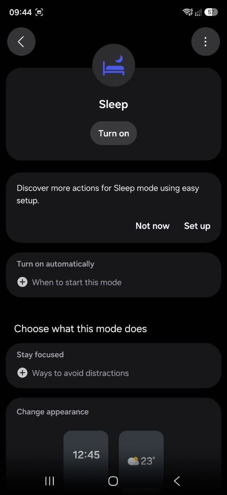
Automated Sleep Mode Setup
Figure 2.2: Programming Sleep Mode. Automate activation so you never have to remember to switch on Do Not Disturb manually before sleeping.
How to set your automated bedtime schedule:
- Navigate to Settings > Modes and Routines (or tap Bedtime mode from the bottom of Digital Wellbeing).
- Tap the blue Sleep mode card with the bed and crescent moon icon.
- Under Turn on automatically, tap When to start this mode. Set your target sleep window (e.g., 11:00 PM to 07:00 AM) and select all 7 days for a consistent circadian rhythm.
- Under Stay focused, tap Ways to avoid distractions to activate Do Not Disturb. Add crucial emergency exceptions (such as your parents, hostel warden, or repeated calls) so you never miss a real-world emergency while sleeping.
The cornerstone of breaking late-night smartphone addiction is stripping the screen of color. When your scheduled sleep mode activates, Android automatically desaturates your entire display.
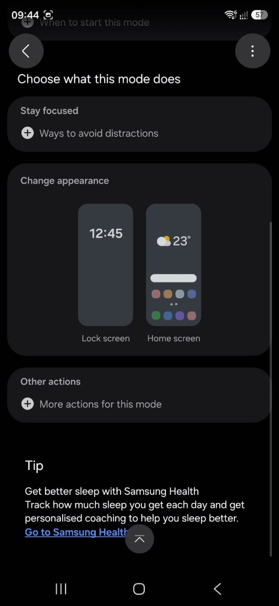
Appearance Settings: Automatic Grayscale & Dark Theme
Figure 2.3: Visual desaturation in Sleep Mode. Stripping color from your lock screen and home screen removes the dopamine stimulation of vibrant app icons and short-form video feeds.
The Neuroscience Principle for Students:
- How Color Hooks the Brain: High-dopamine apps like Instagram Reels, TikTok, and YouTube rely on vivid, high-saturation colors and bright red notification badges to trigger involuntary visual orientation reflexes.
- Why Grayscale Works: In black-and-white, social media video feeds look flat, boring, and emotionally drained. Without artificial color stimulation, your brain naturally loses interest within 3 to 5 minutes, allowing your natural melatonin surge to take over.
- Appearance Setup: In Sleep mode, tap Change appearance, select the Grayscale filter, and apply a muted, dark wallpaper to both the lock screen and home screen.
While Sleep Mode protects your night, daytime study blocks require firm boundaries. Digital Wellbeing allows you to assign strict daily quotas to individual apps and broad categories.
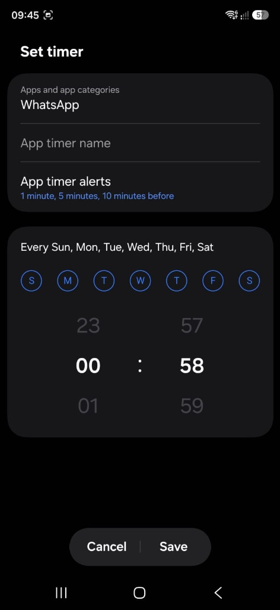
Granular App Timer & Early Alerts
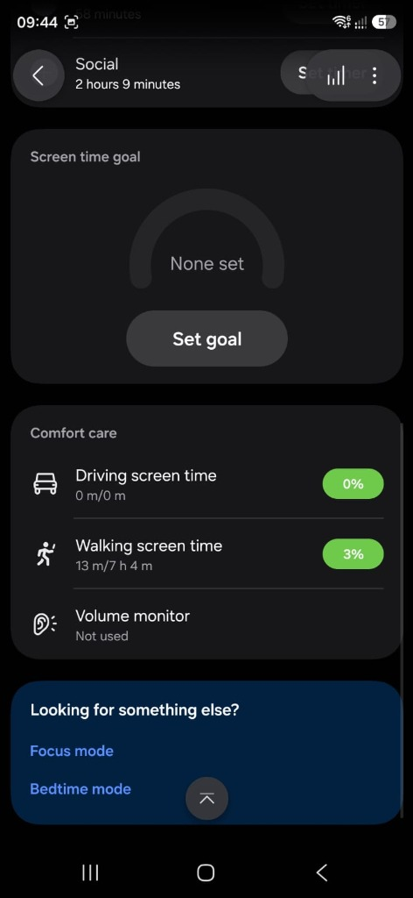
Social Category Goals & Walking Screen Time
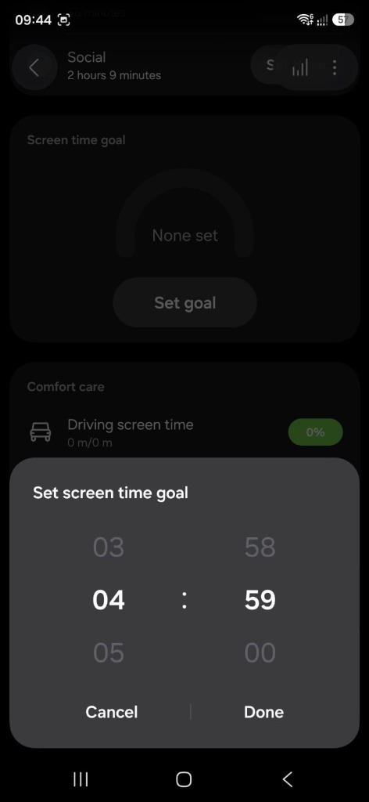
Screen Time Goal Roller
Figure 2.4: App timer and category goal configuration. Set daily caps with 10m, 5m, and 1m early warnings before the app turns gray and locks until midnight.
How to configure your daytime limits:
- Under App timers, tap Set timer next to high-distraction apps (e.g. WhatsApp or Instagram).
- Use the roller wheel to set a realistic daily quota (e.g., 00:58 for 58 minutes). Check all 7 days (S M T W T F S) for steady enforcement.
- Notice the App timer alerts feature: Digital Wellbeing notifies you at 10 minutes, 5 minutes, and 1 minute before your time runs out, preventing sudden mid-conversation lockouts.
- Tap into the Social category card to set an overarching category goal (e.g., capping total social networking to under 2 hours daily).
True digital control starts with objective self-awareness. Digital Wellbeing tracks three critical behavioral metrics: active screen minutes, notification spikes, and compulsive phone unlocks.
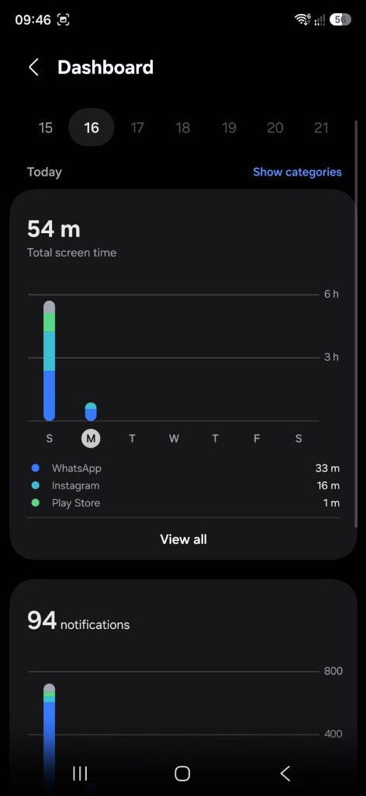
Daily App Usage & Notification Telemetry
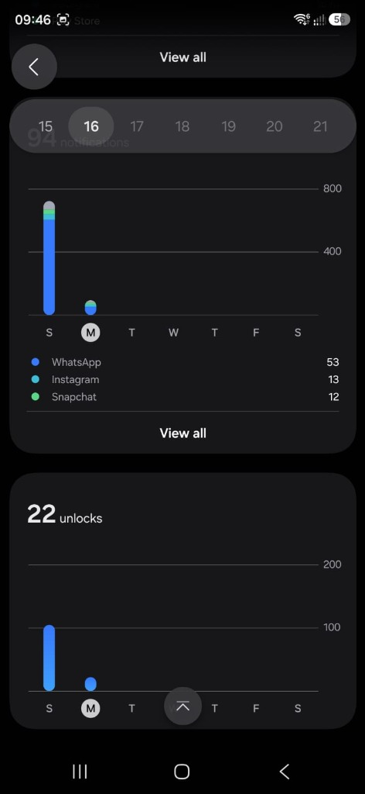
Notification Culprits & Unlock Counts
Figure 2.5: Detailed usage telemetry. Spotting that 94 notifications arrive per day reveals why study sessions get shattered every few minutes.
Key telemetry metrics to audit:
- Stacked Daily Bar Charts: Tap on any day to see an hour-by-hour breakdown color-coded by application (blue for WhatsApp, teal for Instagram, green for Play Store).
- Notification Volume: In our student test run, the device received 94 notifications in a single day. Tapping into the list exposes the primary culprits: WhatsApp (53 alerts), Instagram (13 alerts), and Snapchat (12 alerts). Use this data to mute non-essential group chats.
- Daily Unlocks: The lower bar chart tracks how many times you wake your screen (e.g., 22 unlocks today vs. 80+ unlocks on unmanaged days). Reducing unlock frequency is the single best predictor of deep study retention.
Sustainable digital wellness is built through consistent weekly habits. Every Sunday evening, review your automated Weekly report to measure your recovery of study hours.
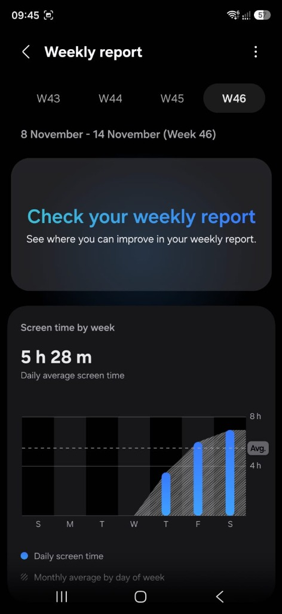
Weekly Report: Week-on-Week Screen Time Comparison
Figure 2.6: Automated weekly report. Comparing daily screen time bars against your monthly average baseline helps you track sustained progress over time.
How to read your weekly report:
- Baseline Average: Notice the 5 h 28 m daily average screen time. The shaded trend line plots your daily usage against your monthly average, clearly highlighting weekend spikes (Friday and Saturday reaching ~7.5 hours).
- Progressive Reduction: Students who pair Bedtime Mode with daytime app timers consistently see their daily average drop by 1.5 to 2.5 hours within two weeks.
- Circadian Reward: Best of all, waking up with restored color at 07:00 AM after a full night of uninterrupted, grayscale sleep restores natural morning focus for early 8:00 AM university lectures.